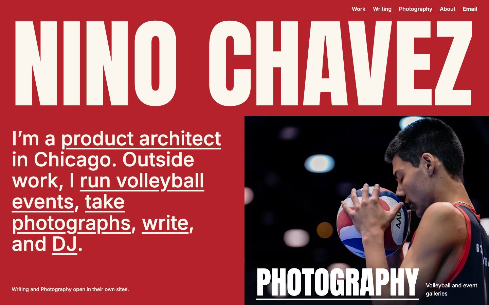
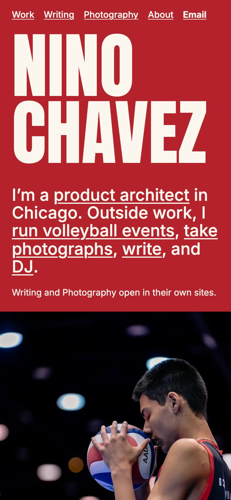
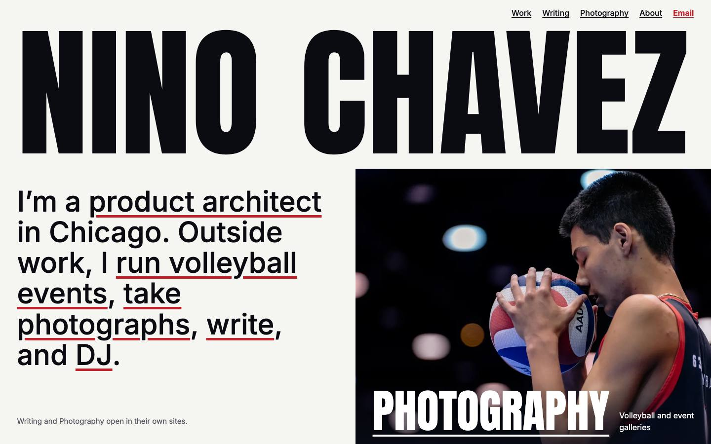
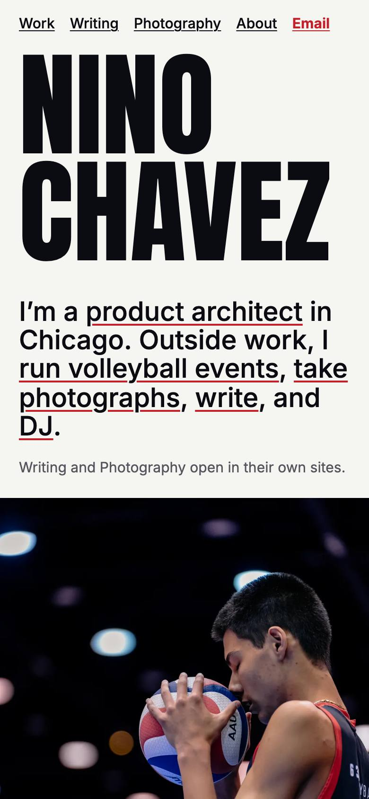
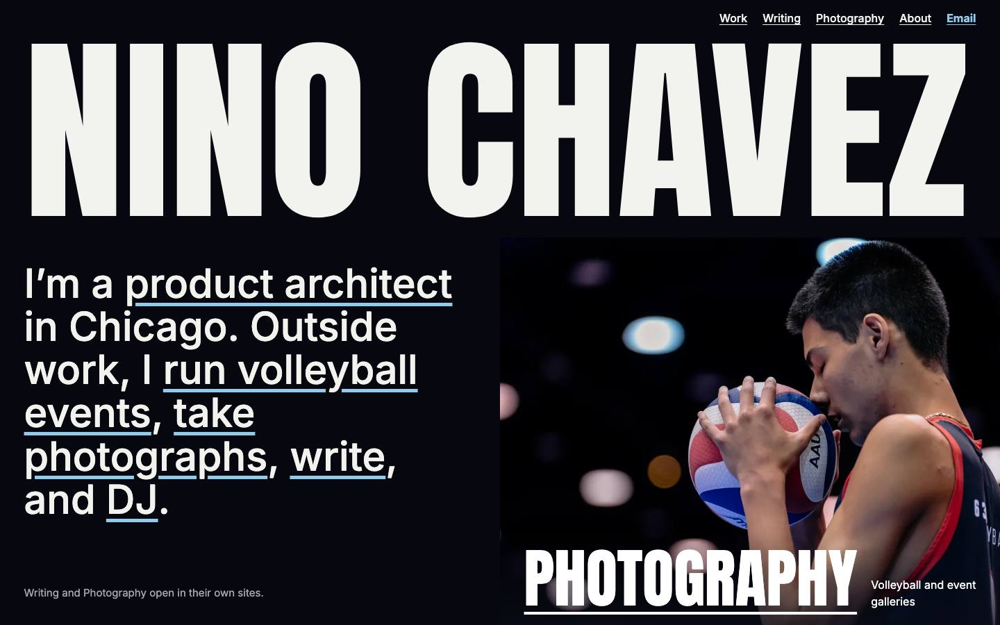
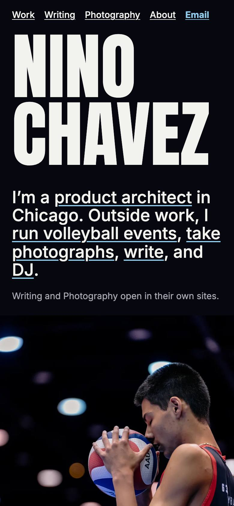

The last round gave every section its own color, and those bands fought your photo and product screens. Here the page keeps one ground, the work supplies the color, and the accent comes from your photo.
Court red owns your first screen and your closing line, picking up the jersey and ball in the photograph. Everything between stays quiet so the products can be seen. Gallery is the safer choice, and the reviewer preferred it.


Color's job. Red marks the two moments that speak for you: who you are, and how to reach you. Quiet paper holds the work.
Reviewer. Ranked it last, but judged it as a red page throughout, which it isn't. Its advice, red only on the hero and closing line, is what this already does.
Watch for. The black photograph meets the red as a hard edge. I read that as poster-like; the reviewer didn't.


Color's job. Black and off-white throughout. Red appears only where you can act: links, Email and the closing line.
Reviewer. Ranked first. The red ties to the photo and the screens read cleanly. Found the thin underlines faint, so I thickened those in the statement.
Watch for. It's the closest to neutral, so it has the least personality of the three.


Color's job. The page takes its black from the arena in your photo. The ice blue comes from the lights behind the player and marks what you can act on.
Reviewer. Ranked second. Found the blue unconnected to the photo, and the light product screens glared against black.
Watch for. It sits closest to your charcoal Photography site and Flickday's black.